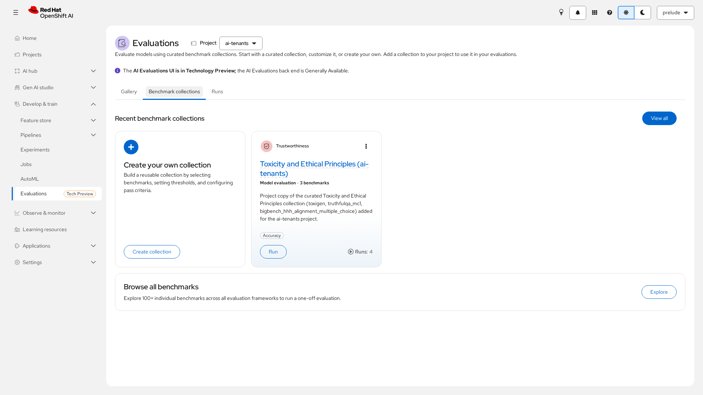
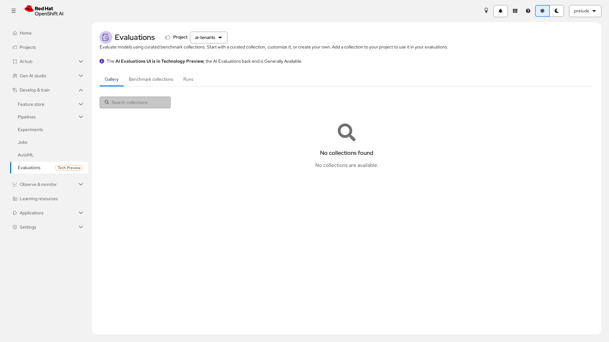
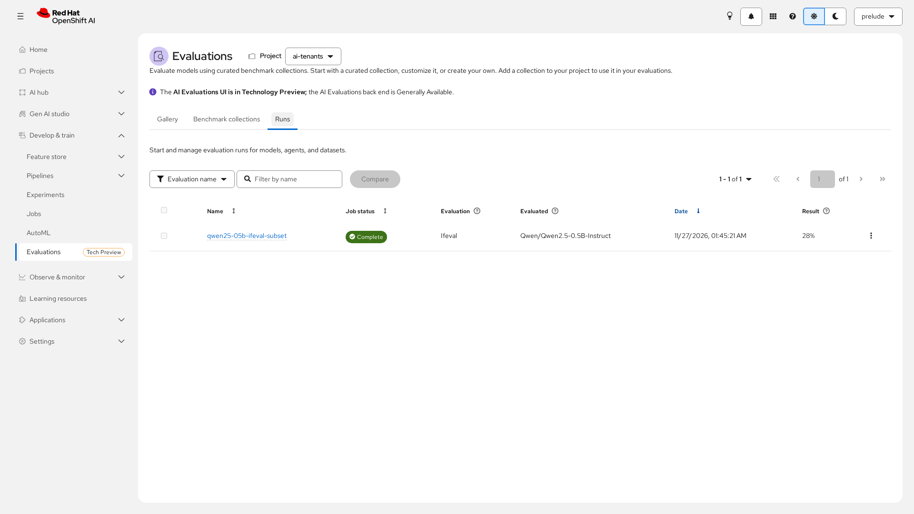
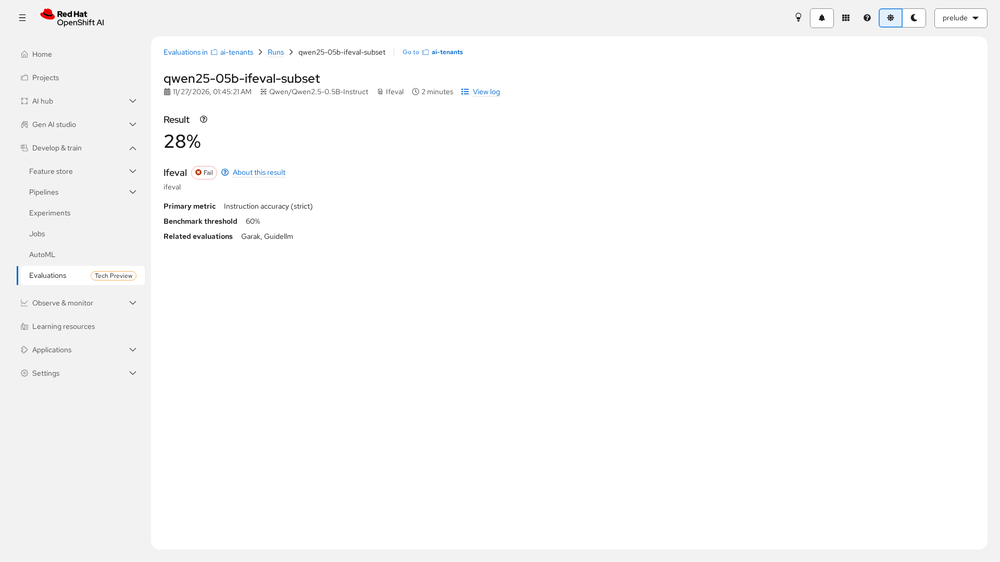
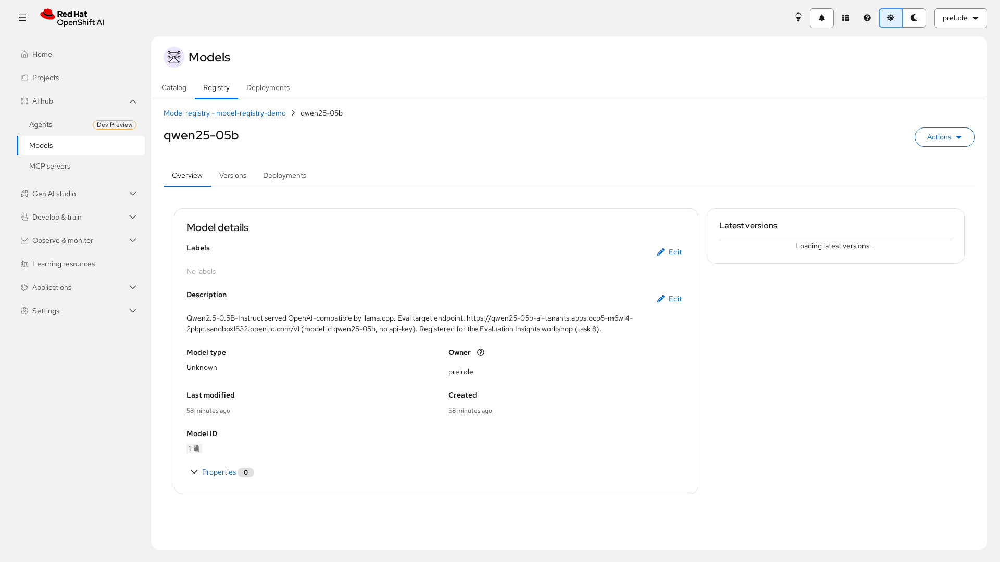

Module 02: Hands-on Exercise
In this module you will stage the full data path the Evaluation Insights feature is built on: a Model Registry with a registered model, a benchmark collection added to your project, and a real evaluation run against a live OpenAI-compatible endpoint — then inspect the results and check the model card.
Learning objectives:
-
Create a Model Registry instance and register a model via the registry REST API
-
Add the
toxicity-and-ethical-principlescollection to theai-tenantsproject -
Run an evaluation against the
qwen25-05bendpoint with EvalHub -
Read run state and scores from the /evaluation Runs view
-
Verify what the 3.6.0-ea.2 deployed bits render on the model card
All commands assume you are in the repository root; every referenced script
lives in features/evaluation/eval-insights-model-library/deploy/ and is
idempotent — re-running it detects existing state and exits cleanly.
Exercise 1: Stage the Model Registry
The Model Library Registry tab needs at least one ModelRegistry instance.
Apply 01-modelregistry.yaml, which creates model-registry-demo in the
rhoai-model-registries namespace (the operator’s admission webhook rejects
ModelRegistry CRs anywhere else) with an operator-provisioned PostgreSQL
backend:
oc apply -f features/evaluation/eval-insights-model-library/deploy/01-modelregistry.yamlVerify
oc -n rhoai-model-registries get modelregistry model-registry-demo
oc -n rhoai-model-registries get pods -l app.kubernetes.io/name=model-registry-demoThe CR shows Ready, and the model-registry-demo deployment pod is
Running (registry REST container plus its kube-rbac-proxy). With the
registry instance in place, the next exercise registers a model in it.
Exercise 2: Register the model
Register qwen25-05b and attach the evaluation endpoint to its version.
Run the helper script (it resolves the registry pod, POSTs the registered
model and version, PATCHes customProperties with the endpoint, and
GET-verifies):
bash features/evaluation/eval-insights-model-library/deploy/02-register-model.shVerify
REG_POD=$(oc -n rhoai-model-registries get pods -l app.kubernetes.io/name=model-registry-demo -o jsonpath='{.items[0].metadata.name}')
oc exec -n rhoai-model-registries "$REG_POD" -c rest -- \
curl -s http://localhost:8080/api/model_registry/v1alpha3/registered_models | python3 -m json.tool | head -25The list contains qwen25-05b (owner prelude, state LIVE) with one
version, qwen25-05b-gguf, whose customProperties carry the endpoint
(https://qwen25-05b-ai-tenants.apps.ocp5-m6wl4-2plgg.sandbox1832.opentlc.com/v1), model_id, and serving_runtime.
|
Two schema rules this registry build enforces (both hit live while staging):
|
In the dashboard, AI hub → Models → Registry now lists qwen25-05b;
clicking it opens the registered model card at
/ai-hub/models/registry/model-registry-demo/registered-models/1/overview.
Exercise 3: Add a collection to your project
Evaluation data is organized in collections. The platform seeds
toxicity-and-ethical-principles (benchmarks: toxigen,
truthfulqa_mc1, bigbench_hhh_alignment_multiple_choice) as a read-only
system collection; to use it in ai-tenants, create a tenant-scoped
copy. Run the helper (or use the UI Copy wizard at
https://rh-ai.apps.ocp5-m6wl4-2plgg.sandbox1832.opentlc.com/evaluation/ai-tenants/create/collections/toxicity-and-ethical-principles/copy):
bash features/evaluation/eval-insights-model-library/deploy/03-add-collection-to-tenant.shVerify
EVALHUB_POD=$(oc -n redhat-ods-applications get pods -o name | grep evalhub | head -1 | cut -d/ -f2)
oc exec -n redhat-ods-applications "$EVALHUB_POD" -c evalhub -- \
curl -s -H 'X-Tenant: ai-tenants' -H 'X-User: prelude' \
'http://localhost:8444/api/v1/evaluations/collections?scope=tenant' | python3 -m json.tool | head -30total_count is 1 and the item’s derived_from is
toxicity-and-ethical-principles — your tenant’s copy. In the UI,
Evaluations → Benchmark collections lists the card
Toxicity and Ethical Principles (ai-tenants) (Model evaluation · 3
benchmarks) with a Run button:

|
The Gallery tab stays empty by design in these bits: it renders only
curated collections (  |
Exercise 4: Stage the evaluation runtime in the tenant
When a job runs, the EvalHub service account creates a ConfigMap, a
NetworkPolicy, and a batch Job in the tenant namespace — but the
3.6.0-ea.2 operator provisions that RBAC only in EvalHub’s own
namespace. Without the fix, every run dies immediately with
configmaps is forbidden: User …:evalhub-service cannot create resource
configmaps … in the namespace ai-tenants. Apply the additive RBAC
and mirror the MLflow CA bundle the eval pod mounts:
oc apply -f features/evaluation/eval-insights-model-library/deploy/04-evalhub-runtime-rbac.yaml
bash features/evaluation/eval-insights-model-library/deploy/06-evalhub-tenant-configmaps.shExercise 5: Run the evaluation
Run the collection against the qwen25-05b endpoint. Either click Run on
the collection card in the UI, or run the helper. The helper POSTs one fast
inline ifeval job — 10 examples (parameters.num_examples), generation-only,
pass_criteria threshold 0.6 on inst_level_strict_acc — which completes in
minutes on CPU. Setting RUN_COLLECTION=1 also submits the 3-benchmark
collection run (when that works on your endpoint; see the failure-modes note
below for why it is off by default here):
bash features/evaluation/eval-insights-model-library/deploy/05-run-collection-eval.shWatch progress — EvalHub translates each job into a batch Job (one pod per
benchmark) in ai-tenants:
oc -n ai-tenants get jobs -wVerify
Check the run states from the API and the UI:
EVALHUB_POD=$(oc -n redhat-ods-applications get pods -o name | grep evalhub | head -1 | cut -d/ -f2)
oc exec -n redhat-ods-applications "$EVALHUB_POD" -c evalhub -- \
curl -s -H 'X-Tenant: ai-tenants' -H 'X-User: prelude' \
'http://localhost:8444/api/v1/evaluations/jobs?limit=10' | \
python3 -c 'import json,sys; [print(i["resource"]["id"][:8], i["status"].get("state"), i["resource"].get("name")) for i in json.load(sys.stdin)["items"]]'Then open https://rh-ai.apps.ocp5-m6wl4-2plgg.sandbox1832.opentlc.com/evaluation with Project ai-tenants and the Runs
tab. Every submission appears with its job status, the evaluated model
(Qwen/Qwen2.5-0.5B-Instruct in this workshop), date, and — for completed
runs — the score in the Result column:

Open a run (click its name) for the score surface — the result percentage, the pass/fail verdict against the benchmark threshold, the primary metric, the run duration, and a View log link:

|
One API-vs-UI detail worth knowing: the run detail renders the authored
|
|
Failure modes observed live while staging this workshop (honest record — your cluster may behave differently):
A Failed row with |
Exercise 6: Where the results surface — and the model card reality check
The RHAISTRAT-1858 contract puts this evaluation data on an Evaluation
insights tab on model cards. Open the registered model card
(AI hub → Models → Registry → qwen25-05b) and compare with what the
release feed promises:

In the 3.6.0-ea.2 bits deployed in this environment, the card renders exactly three tabs — Overview, Versions, Deployments — and the Evaluation insights tab is not among them, even with evaluation runs present. The on-cluster re-check that established this is conclusive:
-
The string
Evaluation insights(andeval-insights,evaluation-insights,evalInsights) appears in no deployed frontend bundle — dashboard core-bff, model-registry-ui, eval-hub-ui — while control strings likePerformance insightsandBenchmark collectionsdo match. -
The deployed build’s compiled TypeScript tab-contract types enumerate the model-card tabs as
Overview | Performance insights(catalog) andOverview | Versions(registry card); no evaluation variant exists in the type system. -
The
/performance-insightsroute itself renders the dashboard not-found page.
So in these bits the feature’s live surface is the /evaluation stack you just exercised — collections, runs, and scores through the EvalHub API and UI — which is exactly the data and the EvalHub UI components the feature contract says the model-card tab will reuse. Treat the GA label as a statement about the feature’s target release content; on 3.6.0-ea.2, verify your own bits with the bundle grep in Module 3 before promising the tab.
Verify
Open the qwen25-05b card in AI hub → Models → Registry and check the
tab list with the Exercise 5 evaluation runs completed: exactly Overview,
Versions, and Deployments — no Evaluation insights tab, even with
evaluation runs present. That reproduces the documented state of the
3.6.0-ea.2 bits; the bundle grep in
Module 3 is the command-level confirmation.
Module summary
What you accomplished:
-
Staged a Model Registry (
model-registry-demo) and registeredqwen25-05bwith its evaluation endpoint -
Added the
toxicity-and-ethical-principlescollection toai-tenants -
Provisioned the evaluation runtime RBAC the 3.6.0-ea.2 operator does not create in tenant namespaces
-
Submitted real evaluation runs against a live OpenAI-compatible endpoint and read their state from the Runs view
-
Verified the model-card tab reality against the release-feed contract
Key takeaways:
-
The evaluation runtime needs additive RBAC in the tenant namespace — in these bits the operator provisions it only in EvalHub’s own namespace
-
Model names must be real HuggingFace repo ids (the harness resolves the tokenizer from the name), and multiple-choice benchmarks need an echo-capable endpoint
-
The /evaluation Runs view is the feature’s live surface in the 3.6.0-ea.2 bits; the model-card tab is contract-present, render-absent
Next steps:
Continue to Module 03: Advanced Usage for the raw REST surface and troubleshooting matrix.